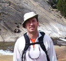

The combination of environmental science (biologists, ecologists, hydrologists, oceanographers) and engineering with information technology has placed us on the verge of transformative scientific discovery in aquatic ecosystems. Cyberobservatory advancements such as NEON, OOI, and CZO provide large data streams that characterize the physical, chemical, and biological states and state changes associated with critical aquatic and terrestrial habitats. Despite tremendous advances in shared cyberinfrastructure, the scientific method—hypothesize, observe, analyze, interpret—remains bogged down by myriad manual and routine data analysis processes aimed at separating environmental variability from the phenomena of interest. To truly enable transformative science, the time and effort required for these processes must be lowered in order to substantially compress the timeframe of observatory-scale analysis.
The goal of this workshop is to develop a vision for aquatic ecosystems research that will accelerate advances in modeling and discovery through software innovations. Participants will include domain experts in aquatic ecosystems as well as computer scientists with relevant backgrounds that include sensor networks, workflow technologies, information integration, and intelligent user interfaces. Participants will learn about existing workflow technologies that aim to capture analytic processes to make them more efficient and repeatable. By analyzing the processes and tools involved in the scientific discovery cycle, we will expose current bottlenecks and elicit requirements for necessary software capabilities for this research community. Participants will also formulate a vision of how the sustainability of aquatic ecosystems would be significantly transformed if such capabilities were made available to researchers.
The result of this workshop will be a written report authored by interested participants, and a follow-on submission to a relevant journal.
8:30-9:00 Continental breakfast
9:00-9:30 Welcome, introductions, and workshop goals
9:30-10:00 Long-term goals for aquatic ecosystems sustainability, Tom Harmon
10:00-10:15 Discussion
10:15-10:30 Break
10:30-11:30 Brief presentations of current challenges, All participants
11:30-12:00 Planning breakout topics
12:00-1:00 Lunch (provided)
1:00-2:30 Breakout sessions (First theme)
2:30-2:45 Break, write session reports
2:45-3:30 Reports from breakout groups (First theme)
3:30-5:00 Breakout sessions (Second theme)
5:00-5:15 Break, write session reports
5:15-6:00 Reports from breakout groups (Second theme)
6:30-9:30 Group dinner at Chef Hannes (directions)
8:00-8:30 Continental breakfast
8:30-9:00 Workflows, semantics, provenance, metadata
9:00-9:30 Planning new breakout topics
9:30-11:00 Breakout sessions (Third theme)
11:00-11:15 Break, write session reports
11:15-12:00 Reports from breakout groups
12:00-12:30 Synthesis
12:30-1:30 Lunch (provided)
1:30-3:00 Synthesis (continued)
3:00-5:00 Writing
The workshop will be held at the Information Sciences Institute of the University of Southern California. ISI is located off-campus and 5 mins from the Los Angeles International Airport.
View on Google Maps|  |
Tom Harmon
|
 |
Yolanda Gil
|
 |
Ewa Deelman
|
 |
Craig Knoblock
|
 |
Terry Benzel
|
 |
Pedro Szekely
|
Matt Becker, Department of Geological Sciences, California State University Long Beach, mbecker3@csulb.edu
Terry Benzel, Information Sciences Institute, University of Southern California, tbenzel@isi.edu
Amy Braverman, Jet Propulsion Laboratory (JPL), Amy.J.Braverman@jpl.nasa.gov
Dan Crichton, Program Manager, Data Systems and Technology, Earth Science and Technology, Jet Propulsion Laboratory, daniel.j.crichton@jpl.nasa.gov
Todd Crowl, Department of Watershed Sciences, Utah State University, facrowl@gmail.com
Ewa Deelman, Information Sciences Institute, University of Southern California, deelman@isi.edu
Yolanda Gil, Information Sciences Institute, University of Southern California, gil@isi.edu
Stephanie Granger, Jet Propulsion Laboratory (JPL), stephanie.l.granger@jpl.nasa.gov
Qinghua Guo, School of Engineering, University of California Merced, qguo@ucmerced.edu
Paul Hanson, Center for Limnology, University of Wisconsin at Madison, pchanson@wisc.edu
Tom Harmon, School of Engineering, University of California Merced, tharmon@ucmerced.edu
Andreas Hofmann, Monterey Bay Aquarium Research Institute (MBARI), ahofmann@mbari.org
Burt Jones, Biology Department, University of Southern California, bjones@usc.edu
Craig Knoblock, Information Sciences Institute, University of Southern California, knoblock@isi.edu
Mike McCann, Monterey Bay Aquarium Research Institute (MBARI), mccann@mbari.org
Timothy Stough, Jet Propulsion Laboratory (JPL), timothy.m.stough@jpl.nasa.gov
Pedro Szekely, Information Sciences Institute, University of Southern California, pszekely@isi.edu
Ryan Utz, National Ecological Observatory Network (NEON), Aquatic/STREON, rutz@neoninc.org
Sandra Villamizar, School of Engineering, University of California Merced, svillamizar_amaya@ucmerced.edu
The workshop is sponsored by the Information Sciences Institute and the UC Merced School of Engineering. The University of Southern California's Information Sciences Institute (ISI) is a world leader in many areas of computer science such as computer networks, distributed systems, and artificial intelligence. Part of USC's Viterbi School of Engineering, ISI is known for excellence in basic and applied research.
UC Merced is the first new American research university in the 21st century, with a mission of research, teaching and service.
"Improving watershed conservation efforts using existent ecohydology data", by Ryan Utz
"How do we represent data as models and models as data", by Matt Becker
"Data Preparation Using Karma", by Pedro Szekely and Craig Knoblock
"Data Mining, Data Fusion, and Analysis of Massive Distributed Data Sets", by Amy Braverman
"GLEON Presentation", by Paul Hanson
"Metrics for Ecosystem Management and Estuarine Biogeochemical Modeling", by Andreas Hofmann
"Pegasus Workflow Management System", by Ewa Deelman
"Improving watershed conservation efforts using existing ecohydrology data", by Ryan Utz
"Stochastic Network Modeling for Managing Water Resources in a Changing Climate", by Tim Stough
"Data Fusion and the Analysis of Distributed Data", by Amy Braverman
"Google Earth Screen Shot", by Mike McCann
"Coastal Ocean Observing in Southern California", by Burt Jones
"Data Preparation With Karma", by Pedro Szekely and Craig Knoblock
{kind=link}
{kind=link}